如何用idea来创建maven多模块项目
第一步：创建父工程，这是一个pom工程
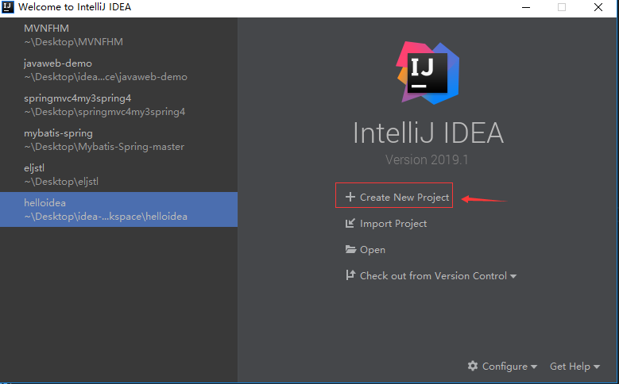
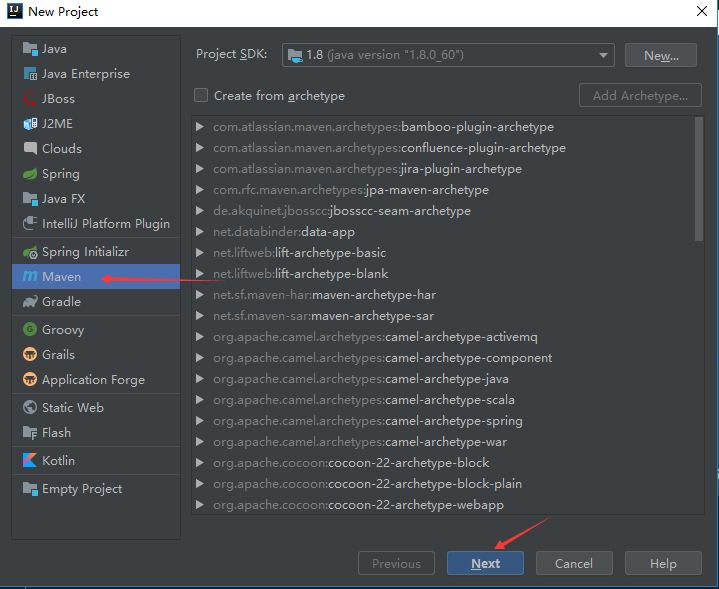
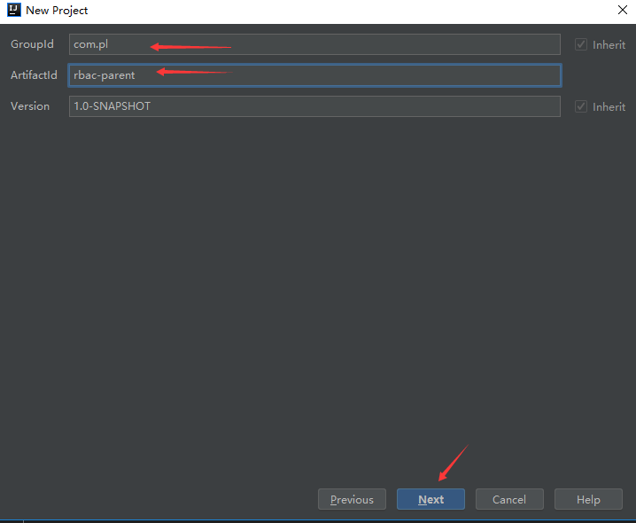
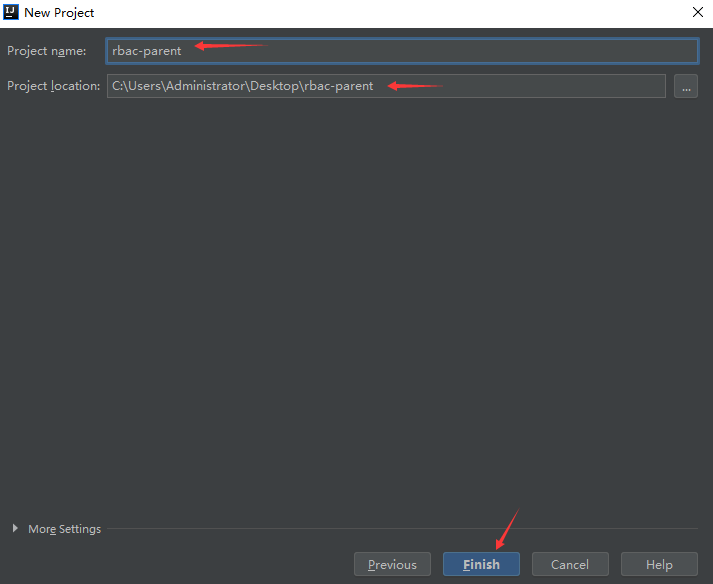
第二步：将父工程中的src文件删除，并修改pom.xml文件
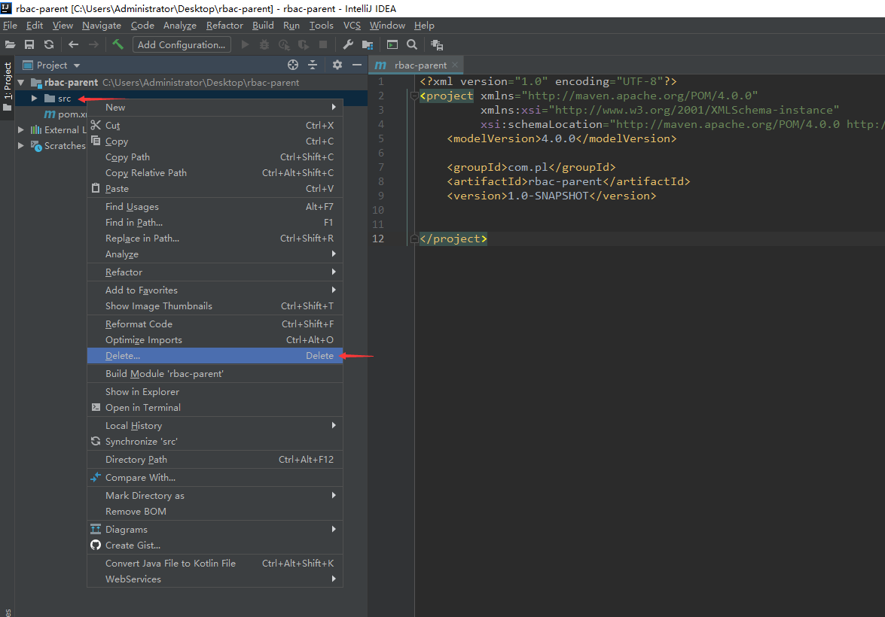

第三步：在父工程下创建子模块（公共common模块），这是一个jar工程
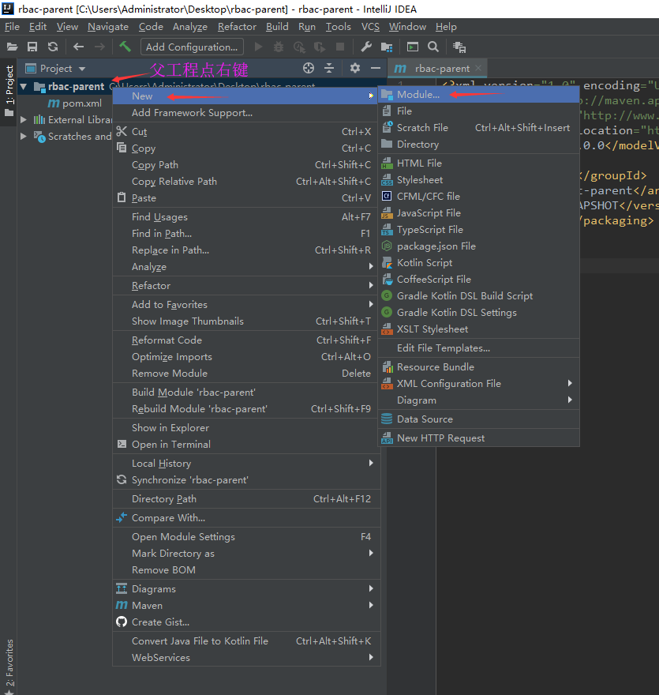
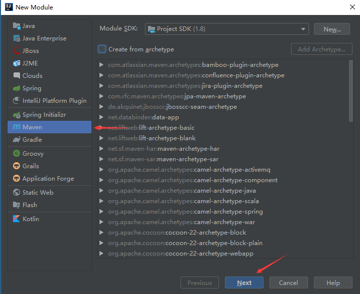
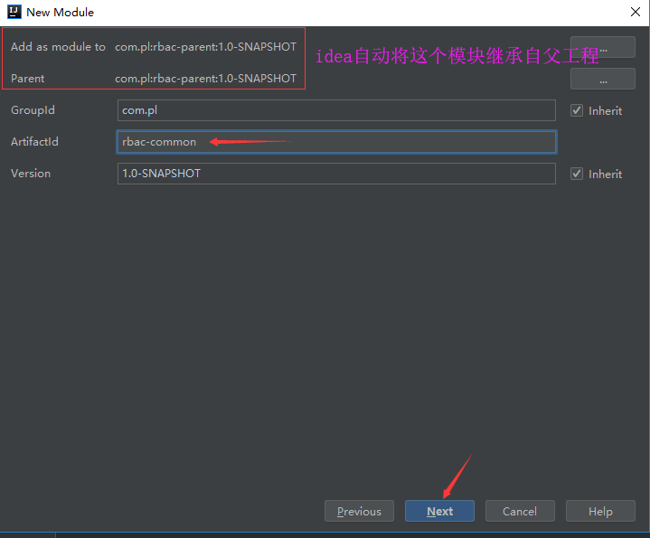
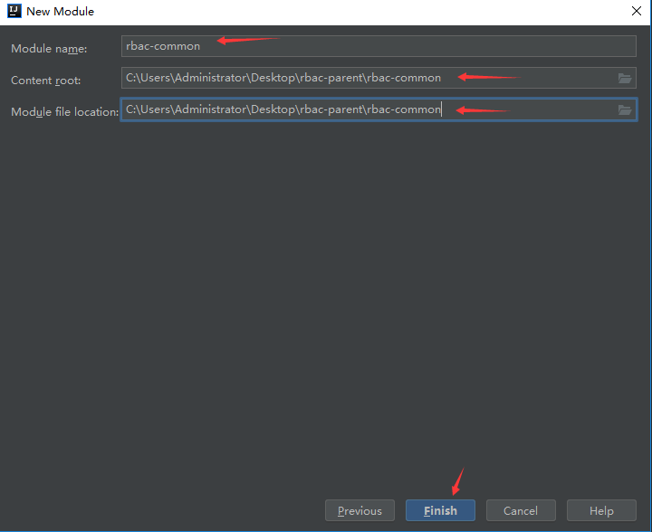
第四步：在父工程下创建子模块（后台管理admin模块），这是一个jar工程
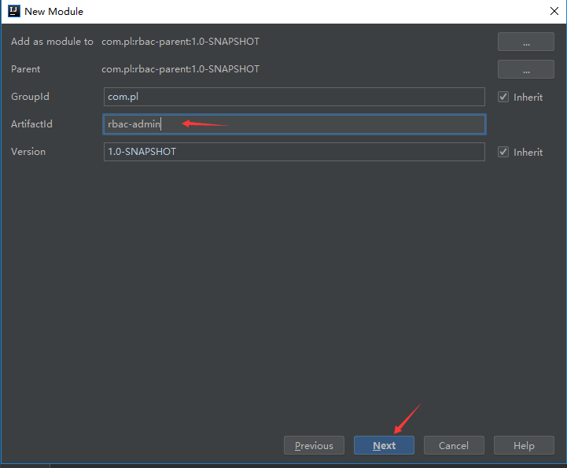
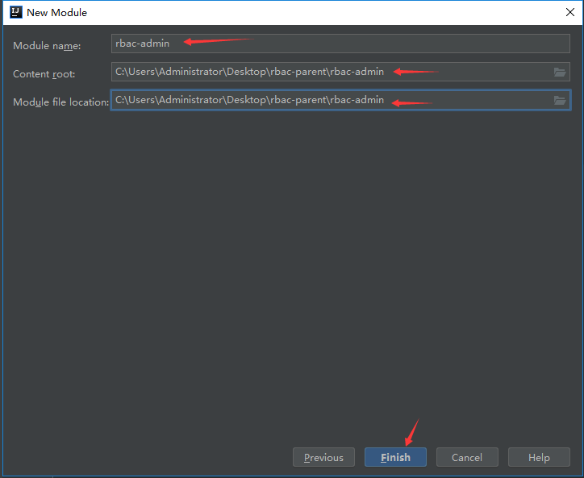
第五步：在父工程下创建子模块（前台portal模块），这是一个jar工程
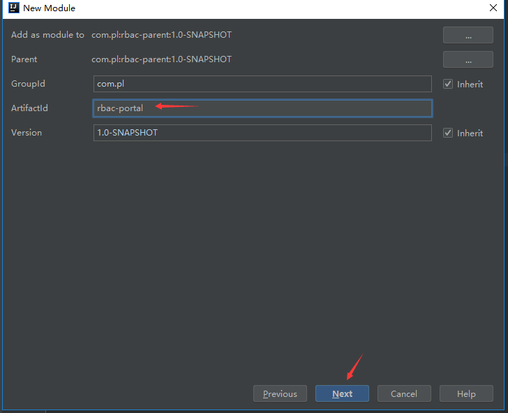
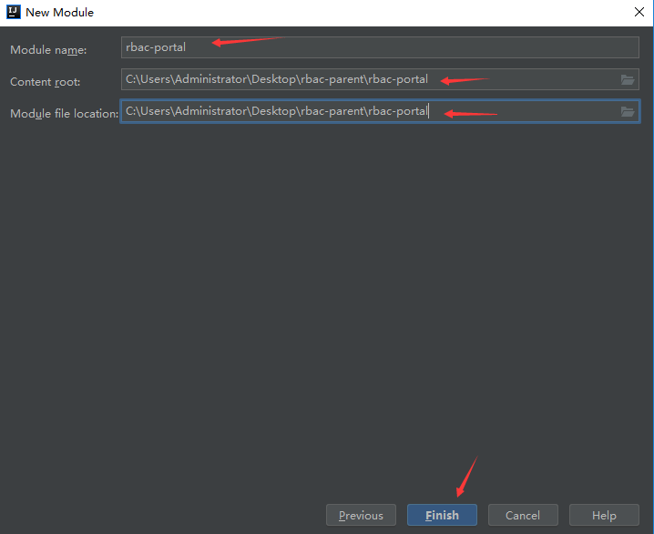
第六步：在父工程下创建子模块（显示view模块），这是一个war工程
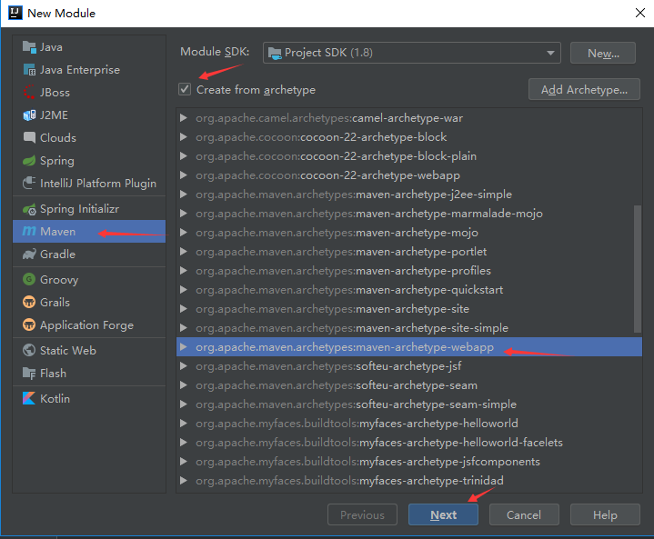
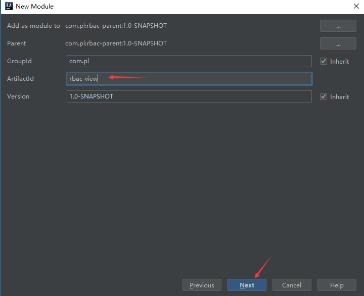
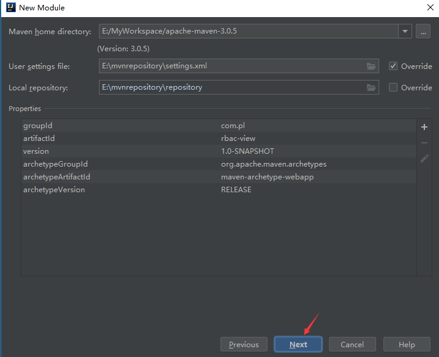

第七步：添加模块之间的依赖关系
 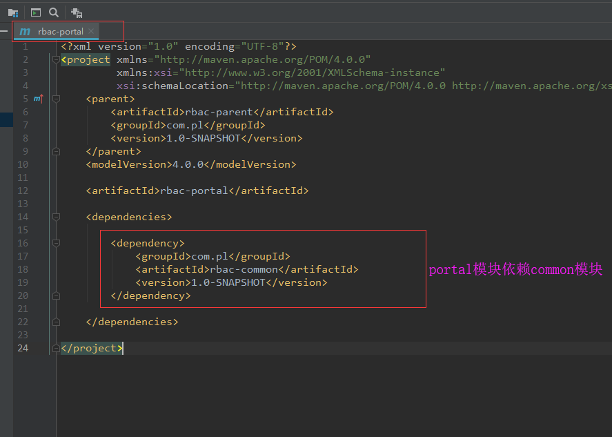
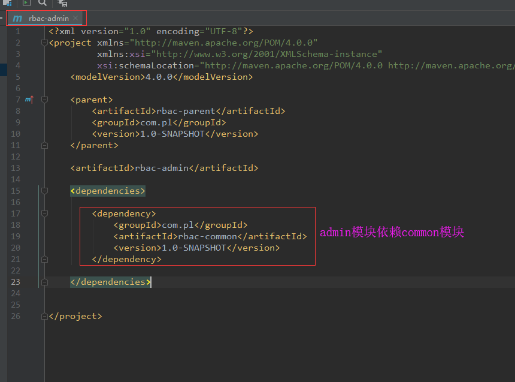
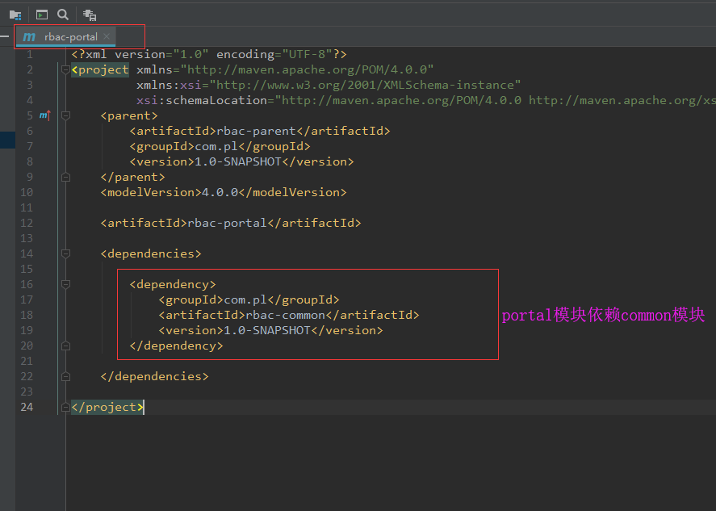
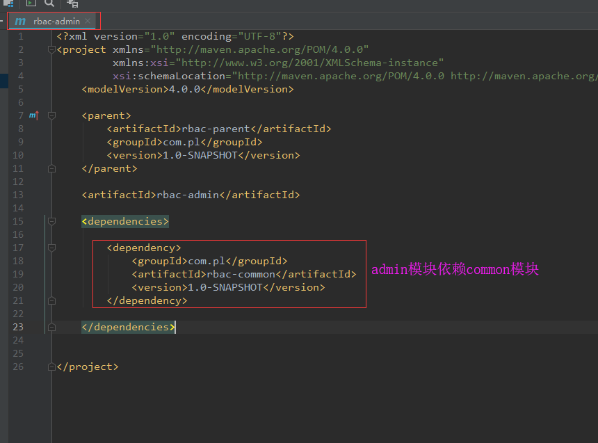